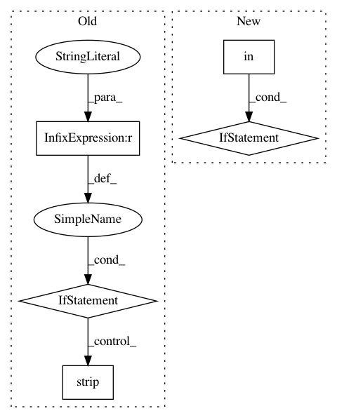

3e50a20ff2d5a0bf5f0735fc1476b4790e48cc5c,generator/modules/caffe2.py,Caffe2,build,#Caffe2#,12
Before Change
%s
""" % (
switcher,
"" if pyver == "2.7" else (r"""
mv /usr/local/lib/python3/dist-packages/caffe2 \
/usr/local/lib/python%s/dist-packages && \
""" % pyver).strip()
)
After Change
typing \
&& \
""" + (r"""
wget -O ~/caffe2.tar.xz \
https://github.com/ufoym/prebuild/raw/caffe2/caffe2-master-%s-%s-linux_x86_64.tar.xz && \
tar -xvf ~/caffe2.tar.xz -C /usr/local/lib && \
""" % (cuver, platform) if cuver in ["cu90"] and platform in ["cp27-cp27mu", "cp36-cp36m"] else r"""
$GIT_CLONE https://github.com/pytorch/pytorch.git \
~/caffe2 --branch master --recursive && \
cd ~/caffe2 && mkdir build && cd build && \
cmake -D CMAKE_BUILD_TYPE=RELEASE \
-D CMAKE_INSTALL_PREFIX=/usr/local \
-D USE_CUDA=%s \
-D USE_MPI=OFF \
-D USE_NNPACK=OFF \
-D USE_ROCKSDB=OFF \
-D BUILD_TEST=OFF \
.. && \
make -j"$(nproc)" install && \
""" % switcher)
In pattern: SUPERPATTERN
Frequency: 3
Non-data size: 5
Instances
Project Name: ufoym/deepo
Commit Name: 3e50a20ff2d5a0bf5f0735fc1476b4790e48cc5c
Time: 2018-10-08
Author: a@ufoym.com
File Name: generator/modules/caffe2.py
Class Name: Caffe2
Method Name: build
Project Name: OpenNMT/OpenNMT-py
Commit Name: 35cf4f0ae774a4aa500318879a1a4d53408ac129
Time: 2020-06-02
Author: plison@nr.no
File Name: onmt/translate/translation.py
Class Name: TranslationBuilder
Method Name: _build_target_tokens
Project Name: cjekel/tindetheus
Commit Name: 3e7aad532e3703e5b2743f42ec4b0621e37955de
Time: 2019-11-27
Author: cjekel@gmail.com
File Name: tindetheus/tindetheus.py
Class Name:
Method Name: command_line_run